Pour les graphistes · gratuit, sans compte, tout est calculé dans ton navigateur
Dither, halftone, glitch.
Importe une image ou une vidéo, empile des effets — dither, halftone, VHS, glitch, gradient maps, grain… — règle chacun, anime n’importe quel réglage en boucle parfaite, puis exporte en PNG, JPEG ou vidéo MP4.
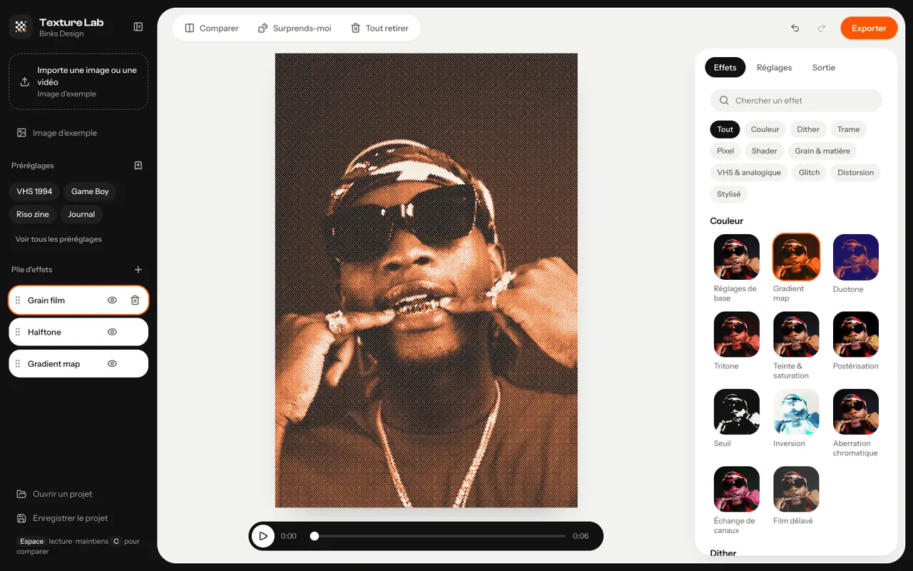
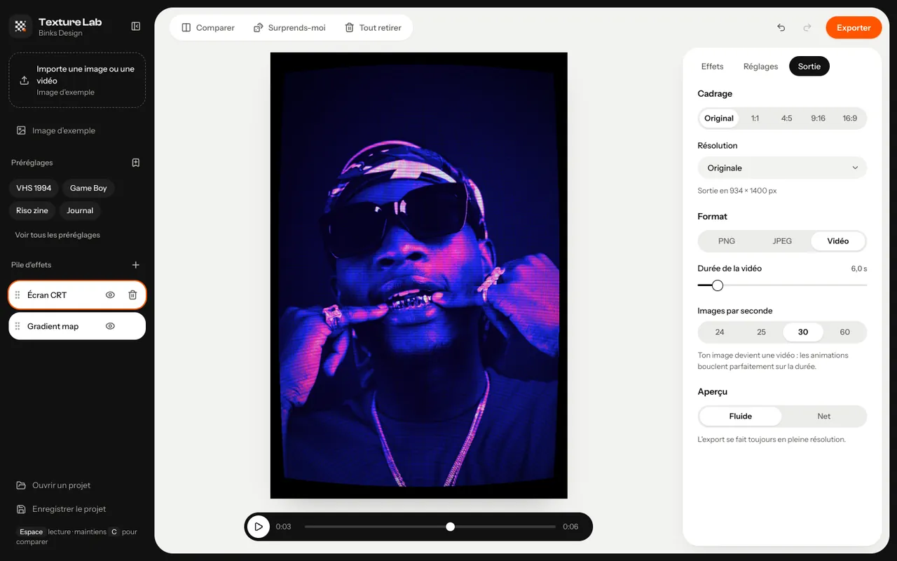
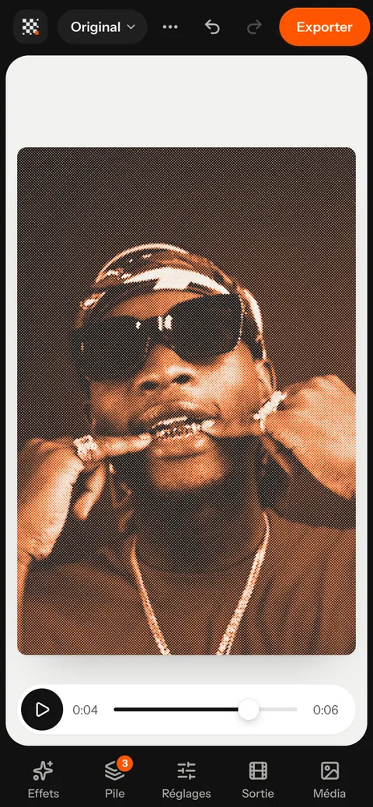
- 80effets répartis en 10 familles
- 20préréglages prêts à l’emploi
- 9modes de fusion par couche
- 0fichier envoyé sur un serveur
Quatre étapes,un rendu prêt.
Pas de compte, pas d’installation : tout se passe dans une seule page. Ta pile d’effets et tes réglages de sortie sont mémorisés dans le navigateur.
Importe une image ou une vidéo
Glisse-la sur la page ou clique sur la zone d’import. Pas de fichier sous la main ? Une image d’exemple est intégrée à l’app.
Empile des effets
Pioche dans la bibliothèque ou pars d’un préréglage. Les effets s’empilent : celui du haut s’applique en dernier. Glisse une couche pour changer l’ordre.
Règle et anime
Chaque effet a ses réglages, une opacité et un mode de fusion. Le petit bouton à côté d’un réglage l’anime : valeur d’arrivée, mouvement, vitesse.
Exporte
Image PNG ou JPEG en pleine résolution, ou vidéo MP4 — avec le son de ta vidéo d’origine si tu le gardes. Cadrages Original, 1:1, 4:5, 9:16 et 16:9.
80 effets,dix familles.
Des classiques de l’impression aux écrans rétro. Chaque effet a sa vignette calculée sur ton image, une recherche et un filtre par famille ; un bouton « Surprends-moi » tire une pile au hasard.
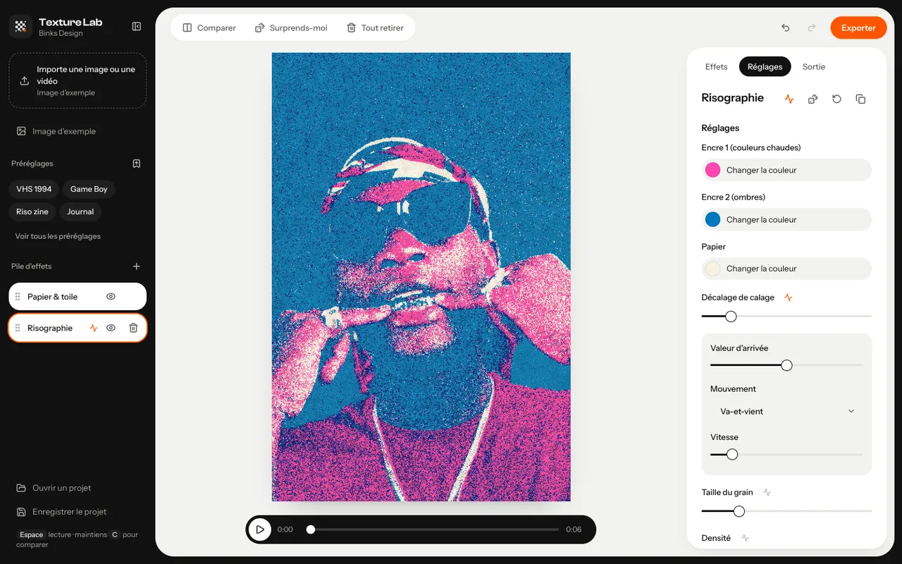
Bibliothèque d’effets 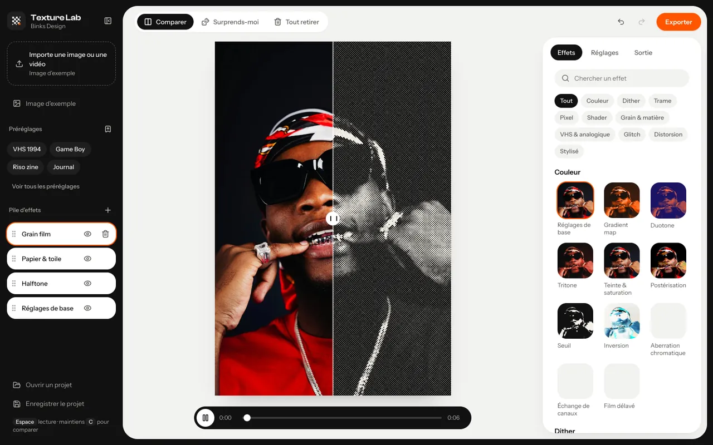
Comparer avant / après Sortie image ou vidéo Réglages et animation
- 01Couleur · 11 effets — gradient map, duotone, tritone, seuil, film délavé…
- 02Dither · 5 effets — Bayer, à motifs, diffusion (Floyd-Steinberg, Atkinson…)
- 03Trame · 13 effets — halftone, CMJN, gravure, hachures, ASCII, risographie…
- 04Pixel · 8 effets — pixel art rétro, écran LCD, matrice LED, point de croix…
- 05Shader · 6 effets — vitrail, low poly, moiré, plasma, hologramme…
- 06Grain & matière · 9 effets — grain film, poussière, papier et toile, bloom…
- 07VHS & analogique · 6 effets — VHS, incrustation, écran CRT, scanlines…
- 08Glitch · 9 effets — décalage RVB, pixel sorting, compression JPEG, datamosh…
- 09Distorsion · 7 effets — verre cannelé, ondulation, fisheye, kaléidoscope…
- 10Stylisé · 6 effets — contours, relief, aplats BD, peinture (Kuwahara), néon…
pile d’effets — préréglage « Binks » ├─ Grain film appliqué en dernier ├─ Halftone couleurs d’origine └─ Gradient map dégradé Binks par couche : opacité · fusion · animation
Vingt looks,un clic.
Un point de départ, pas une fin : un préréglage remplit la pile, que tu règles ensuite couche par couche. Tes propres piles s’enregistrent comme préréglages, rangés à la suite.
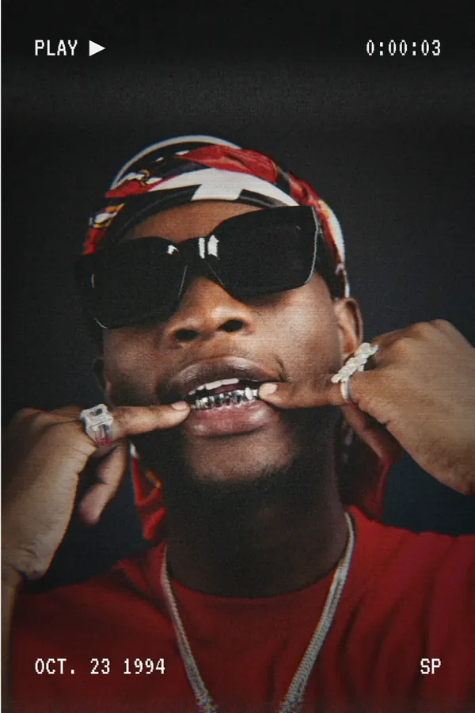
PréréglageVHS 1994 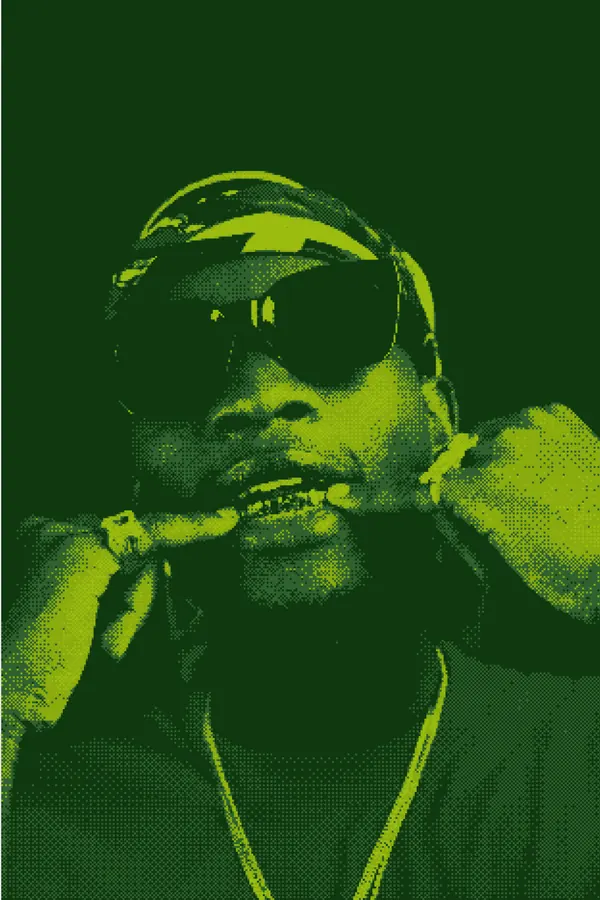
PréréglageGame Boy 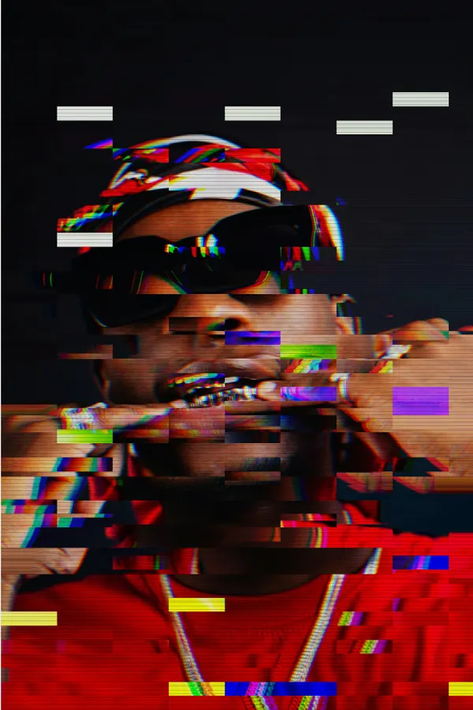
PréréglageGlitch club PréréglageVerre cannelé 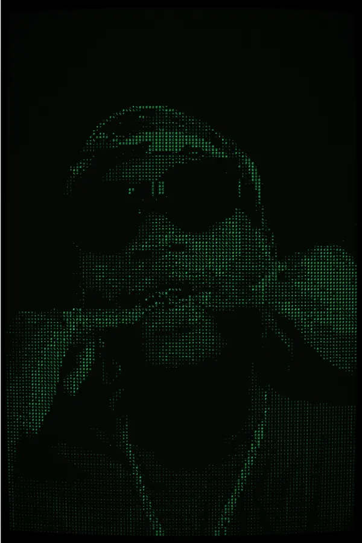
PréréglageTerminal 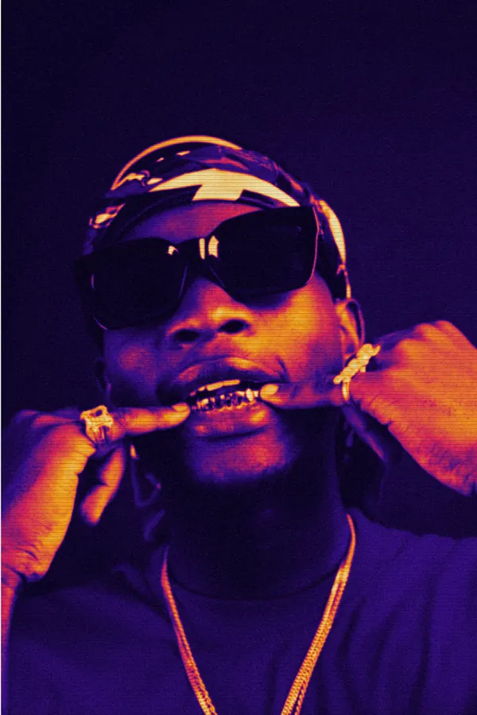
PréréglageThermique 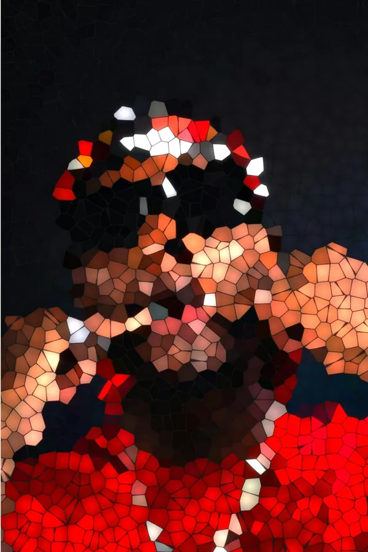
PréréglageVitrail 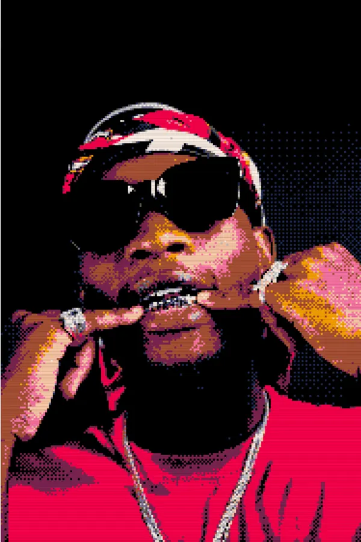
PréréglagePICO-8
- VHS 1994
- Game Boy
- Riso zine
- Journal
- Glitch club
- Cyber CRT
- Film 35 mm
- Gravure
- Verre cannelé
- Terminal
- Thermique
- 1-bit Atkinson
- Pixel sort
- Photocopie
- CMJN offset
- Datamosh
- PICO-8
- Hologramme
- Vitrail
- Binks
Ça bouge,et ça boucle.
Une image fixe devient une vidéo dès qu’un réglage est animé ; une vidéo garde ses effets image par image. Les animations bouclent pile sur la durée choisie.
- Animation
Tout s’anime
Chaque réglage numérique, et l’opacité de chaque couche.
- Valeur de départ → valeur d’arrivée
- 5 mouvements : va-et-vient, montée en boucle, pulsation, dérive organique, saccadé
- Vitesse en cycles par boucle
- Vidéo en entrée
Tes vidéos aussi
Les effets s’appliquent à chaque image.
- Début et fin dans la vidéo source
- Boucler la source si la sortie est plus longue
- Garder le son
- Lecture, pause, curseur de temps
- Sortie
Image ou MP4
L’export se fait toujours en pleine résolution.
- PNG, ou JPEG à qualité réglable
- Vidéo de 0,5 à 60 s pour une image animée
- 24, 25, 30 ou 60 images par seconde
- Originale, 4K, 1440p, 1080p ou 720p
- Cadrage
Prêt pour les réseaux
Recadrage centré, en un clic.
- Original
- 1:1 carré · 4:5 portrait
- 9:16 story, Reel
- 16:9 paysage
Fusion : chaque couche a son opacité et un mode parmi neuf — Normal, Produit, Écran, Incrustation, Lumière tamisée, Addition, Différence, Couleur, Luminosité. Maintiens C pour revoir l’original, ou ouvre le volet Comparer.
Rien ne quitteton appareil.
Tes images et tes vidéos restent chez toi : Texture Lab les lit et les calcule dans le navigateur, avec la carte graphique (WebGL2).
Aucun compte, aucune clé
Pas d’inscription, pas d’API, pas de traceur. Ta pile d’effets, tes réglages de sortie et tes préréglages sont mémorisés dans ton navigateur, et nulle part ailleurs.
Calculé sur place
Effets, export PNG / JPEG et encodage vidéo sont faits localement. Aucun fichier n’est envoyé sur un serveur ; seules les polices de l’interface sont chargées en ligne.
Ton projet en .json
Enregistre ta pile et tes réglages dans un fichier projet, rouvre-le plus tard ou sur une autre machine. L’image ou la vidéo n’y est pas : tu la réimportes.
Pilotablepar un agent.
Claude Code, Codex ou tout agent qui pilote un navigateur peut utiliser Texture Lab avec son API window.BinksyAPI ou ses outils WebMCP (page MCP), ou par son interface : le mode d’emploi décrit les vrais identifiants et le parcours pas à pas.
- Des identifiants stables sur les commandes clés :
#file,#presets,#stack,#exportBtn… - Aucune clé API, aucun service en ligne : l’agent travaille dans la page, le fichier arrive dans les téléchargements.
- Règle d’or : l’agent travaille sur les fichiers que tu lui donnes et n’ajoute aucun texte ni visuel de marque sans ton accord.
page.goto("http://127.0.0.1:8000/app.html")
page.set_input_files("#file", "photo.jpg")
page.wait_for_selector("#srcName:has-text('photo.jpg')")
page.click('#presets .preset:has-text("VHS 1994")')
with page.expect_download() as dl:
page.click("#exportBtn")
dl.value.save_as("photo-texturelab.png")
# PNG par défaut ; JPEG ou vidéo : onglet SortieTrois façonsde commencer.
Une image, un préréglage, un export : quelques secondes suffisent pour un premier rendu.
- Avec ton fichier
Ouvrir l’app
Glisse une image ou une vidéo, empile tes effets, exporte.
Ouvrir l’app - Pour essayer
L’image d’exemple
Une photo intégrée à l’app, pour tester les effets sans ton fichier.
Essayer l’exemple - Pour tout comprendre
La documentation
Effets, animation, vidéo, export, raccourcis clavier et limites.
Lire la doc